Free for members
Ruth Asawa: A 100th Birthday Celebration
Not a MoMA member? Join today for as low as $65 and get access to events like this for free!
“Asawa’s work affirms the power of art to allow us to begin anew.” —The New York Times
Featuring some 300 artworks, Ruth Asawa: A Retrospective charts the artist’s lifelong explorations of materials and forms in a variety of mediums, including wire sculpture, bronze casts, drawings, paintings, prints, and public works. This first posthumous survey celebrates the ways in which Asawa continuously transformed materials and objects into subjects of contemplation, unsettling distinctions between abstraction and figuration, figure and ground, and negative and positive space.
Asawa made art every day, pursuing the inexhaustible possibilities offered by simple materials such as paper and wire since her days at Black Mountain College, where she studied in the late 1940s. Following a move to San Francisco in 1949, her practice grew exponentially as she produced a body of work ranging from endless variations of abstract looped-wire sculptures to calligraphic ink paintings.
Community was crucial to Asawa, who realized numerous public commissions—fountains, murals, and memorials—from the late 1960s onward, and stood at the forefront of arts education in the Bay Area and beyond. Taking a cue from her own work, Ruth Asawa: A Retrospective offers numerous points of entry into her art, encouraging close looking. It also reveals the model of integrated art practice cultivated by Asawa, for whom all acts held a creative potential and for whom there was no separation between living and making art.
Ruth Asawa: A Retrospective is an exhibition partnership between the San Francisco Museum of Modern Art (SFMOMA) and The Museum of Modern Art, New York (MoMA). The exhibition is organized by Cara Manes, Associate Curator, Department of Painting and Sculpture, MoMA, and Janet Bishop, Thomas Weisel Family Chief Curator, SFMOMA; with Dominika Tylcz, Curatorial Assistant, Department of Painting and Sculpture, MoMA; and Marin Sarvé-Tarr, Assistant Curator, and William Hernández Luege, former Curatorial Associate, Painting and Sculpture, SFMOMA.
"It doesn't bother me. Whether it's a craft or whether it's art. That is a definition that people put on things," artist, activist, and educator Ruth Asawa has said. "And what I like is the material is irrelevant. It's just that that happens to be material that I use. And I think that is important. That you take an ordinary material like wire and...you give it a new definition."
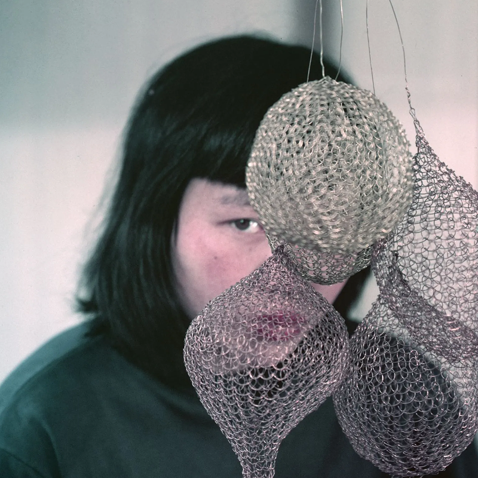
Not a MoMA member? Join today for as low as $65 and get access to events like this for free!

 2.png)
Join us for workshops, gallery activities, parties, and more
View all events
This event has passed.
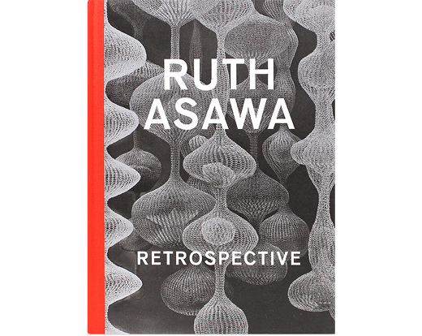
Ruth Asawa: A Retrospective
$75.00
Ruth Asawa: Life's Work
$50.00

Ruth Asawa Bandana
$22.00

Ruth Asawa Pencil Set
$18.00
Audio guide
Get to know a prolific artist who made no distinction between living and making art.
Listen to the full playlistIntroduction to Ruth Asawa
2 min
Ruth Asawa. Untitled (S.073). 1954
2 min
Ruth Asawa. Untitled (S.322, Hanging Six-Lobed, Continuous Interlocking Form). 1965
2 min
Ruth Asawa. Untitled (S.078, Hanging Single-Layered, Five-Pointed Star with Spheres). 1954
2 min
How to see
16 min
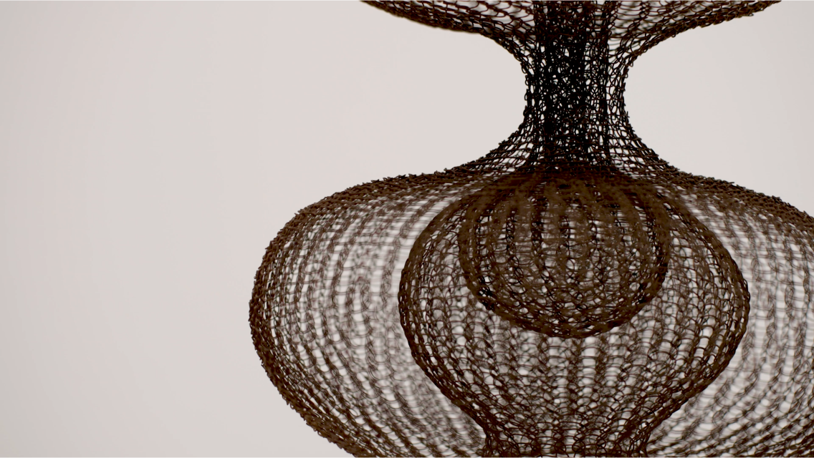
In the studio
How to hand-build with clay
24 min
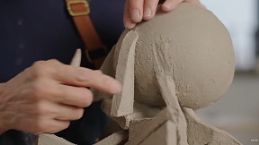
Magazine Podcast
Designing for Climate Change
22 min
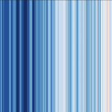
Surrealism at 100
How to See an Exquisite Corpse
14 min
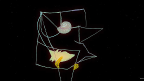
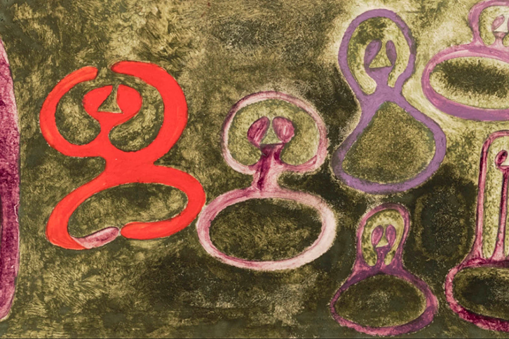
The curators of Ruth Asawa: A Retrospective share an intimate view of the artist's groundbreaking career.

Turn your leftovers into one-of-a-kind holiday décor, with family art activities inspired by Ruth Asawa.
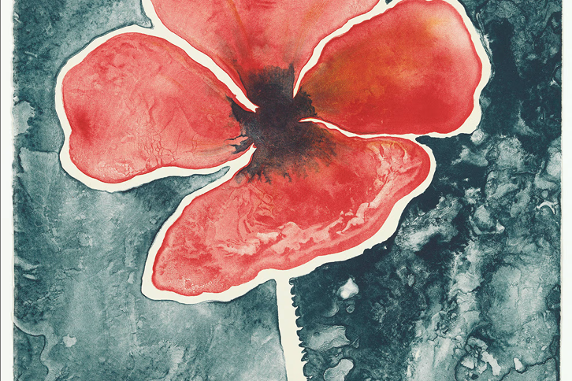
Read an excerpt from a new publication accompanying Ruth Asawa: A Retrospective, about the artist's first forays into lithography.
Placeholder — publications content to come.
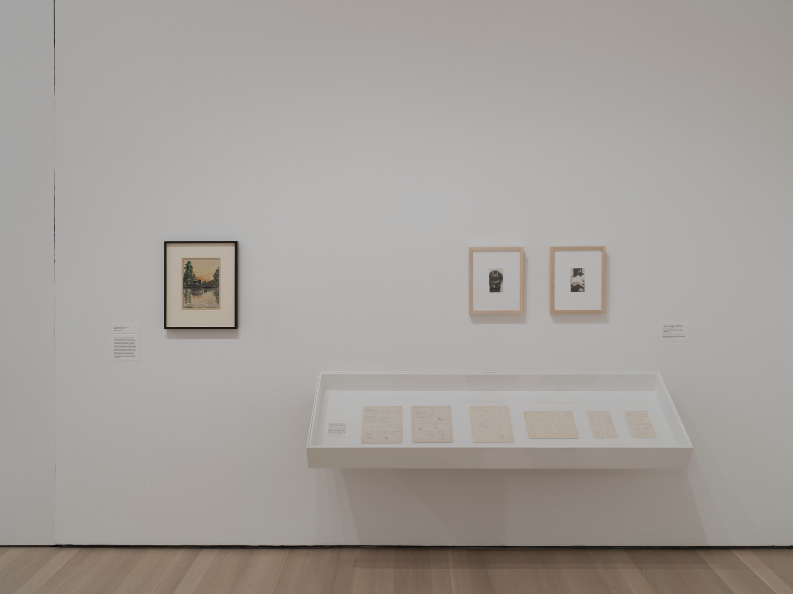


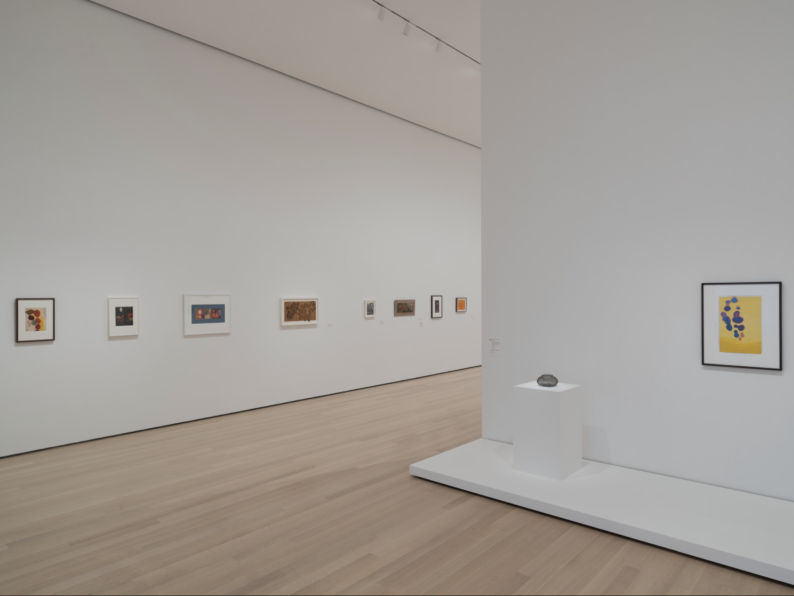
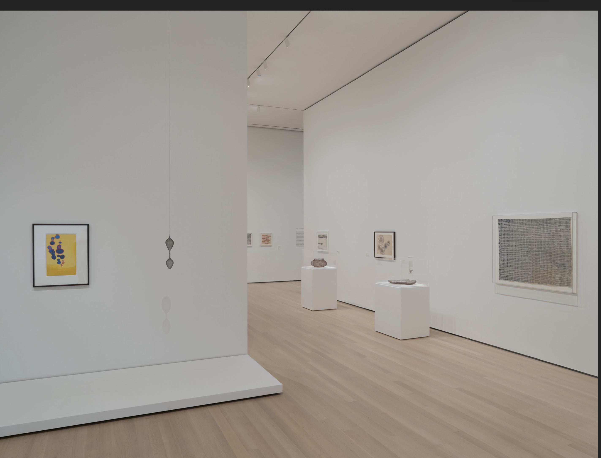
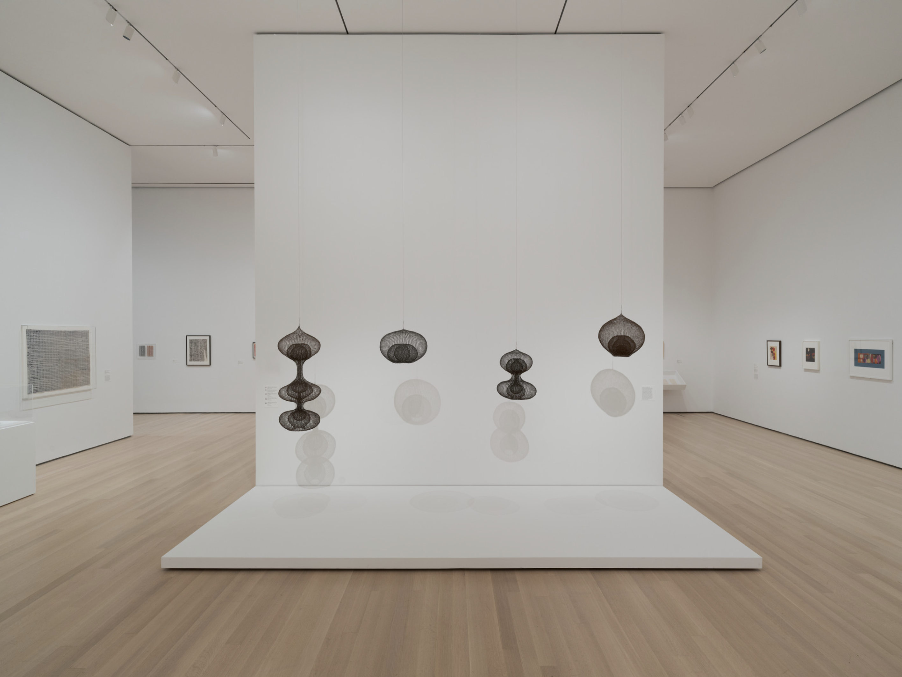

The support of our generous funders and inventive collaborators make all that we do possible.

Sponsorship for the exhibition is provided by UNIQLO, MoMA's partner of #ArtForAll.
Significant support is provided through a grant from the Henry Luce Foundation.
Additional support is provided by the Annual Exhibition Fund. Leadership contributions to the Annual Exhibition Fund, in support of the Museum's collection and collection exhibitions, are generously provided by the Sandra and Tony Tamer Exhibition Fund, Sue and Edgar Wachenheim III, Jerry I. Speyer and Katherine G. Farley, Eva and Glenn Dubin, the Kate W. Cassidy Foundation, Kenneth C. Griffin, Alice and Tom Tisch, the Marella and Giovanni Agnelli Fund for Exhibitions, Mimi Haas, The David Rockefeller Council, The Contemporary Arts Council of The Museum of Modern Art, Anne and Joel Ehrenkranz, Kathy and Richard S. Fuld, Jr., The International Council of The Museum of Modern Art, Marie-Josée and Henry R. Kravis, Jo Carole and Ronald S. Lauder, and The Young Patrons Council of The Museum of Modern Art. Major contributions to the Annual Exhibition Fund are provided by The Sundheim Family Foundation.

Through Apr 11
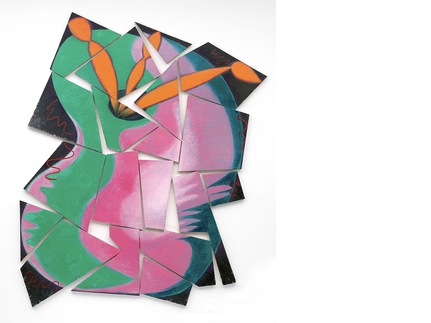
Through May 25
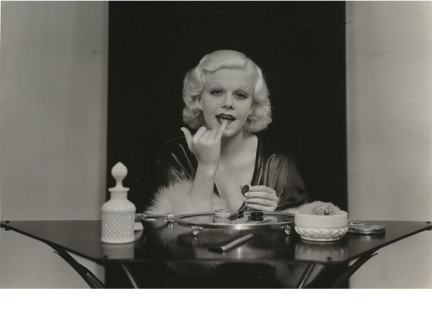
Through Jun 12